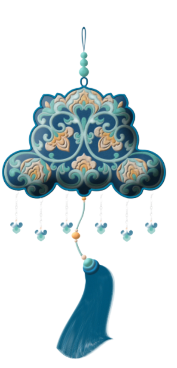
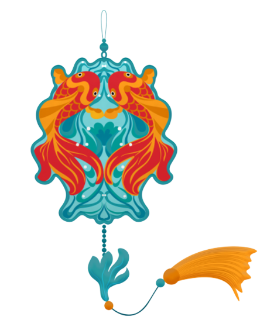
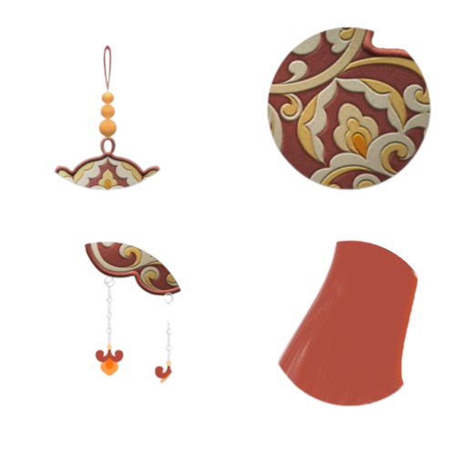
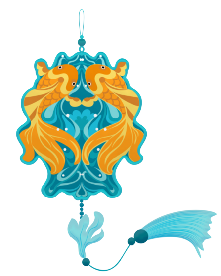

精美的装饰设计，散发着 历史文化传播带给我们当代人 的精神感受。
华盖图案是敦煌石窟壁画中描绘于佛祖·，
菩萨等佛教人物以及部分有显赫地位的供养人物头顶上方的伞盖装饰图案。
。在中国传统文化中，华盖一向与皇族或名位有关，
上古神话传说描述，皇帝与蚩尤大战时，有五色云气和金枝玉叶形状之物现于
于皇帝顶上称为华盖。顾而后世帝王用的车盖亦称华盖又叫宝盖·天盖。在出战时，
战车的顶部多插一顶华盖;在皇族及贵人出行时，也会以一顶或多顶华盖随行。
